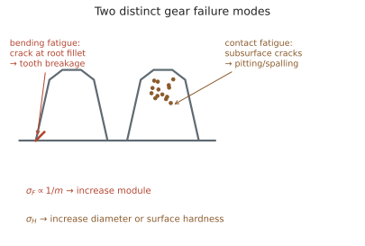

传动 II · 齿轮与传动系统
层次：本科核心 + 业界核心零件。 齿轮是机械传动的主力。它看似只是"带齿的轮子"，但齿廓的形状不是随意画的——它由一个严格的运动学要求推导而来。本页从这个要求出发，讲到齿轮的强度、失效与传动系统设计。
一、齿廓啮合基本定律
要求：两轮以恒定传动比啮合。若传动比波动，从动轮就会周期性加减速 → 惯性力 → 振动与噪声（承第七页）。
基本定律：两齿廓在任一接触点的公法线，必须通过连心线上的一个固定点（节点 P）。
满足这个条件的齿廓有多种，工程上主要用渐开线。
二、为什么是渐开线
渐开线的定义：一条直线在基圆上纯滚动时，直线上一点的轨迹。
渐开线齿廓的四个决定性优点（这四条解释了它统治齿轮世界的原因）：
① 中心距可变而传动比不变。 装配误差、轴承磨损、热膨胀使中心距略有变化时，传动比仍严格恒定（只是压力角与齿隙略变）。这个性质对制造与装配极其宽容，是渐开线胜出的首要原因。
② 齿廓可用直边刀具加工。 渐开线齿轮的基本齿条是直线齿廓，因此可用简单的直线刃刀具（滚刀、插齿刀）以范成法加工——一把刀具可以加工同模数、任意齿数的齿轮。这是巨大的制造经济性优势。
③ 传力方向恒定。 啮合点始终沿啮合线（基圆的公切线）移动，压力角恒定 → 轴承受力方向不变，利于设计。
④ 可互换性。 同模数、同压力角的齿轮都能互相啮合。标准压力角 20° 是全球通用标准。
三、基本参数与几何
模数 \(m\) 是齿轮的"尺寸单位"：
\(d\) 为分度圆直径，\(z\) 为齿数，\(p\) 为齿距。模数已标准化（1, 1.25, 1.5, 2, 2.5, 3, 4, 5…），因为刀具按模数配备。
两个必须掌握的概念：
① 重合度 \(\varepsilon\)：平均同时啮合的齿数。
\(\varepsilon\) 越大，载荷分担越均匀、噪声越小。直齿轮 \(\varepsilon\) 通常在 1.2–1.8；斜齿轮因有轴向重合度，总重合度可达 2–3 以上，因而运转平稳、噪声低——这是汽车变速箱普遍用斜齿轮的原因（代价是产生轴向力，需要止推轴承）。
② 根切与最少齿数：齿数太少时，刀具会把齿根切去一部分，削弱强度。标准直齿轮（压力角 20°、正常齿）的理论最少齿数为 17。
变位齿轮是对策：把刀具径向移动一个距离加工。变位不改变模数与压力角，却能：
- 避免根切（少于 17 齿也能做）；
- 调整中心距（配凑非标中心距）；
- 平衡两轮的齿根强度与磨损。 变位是齿轮设计中一个强有力却常被忽视的工具。
四、齿轮的两种失效模式
这是齿轮设计的核心——两种失效机理完全不同，必须分别校核：

① 齿根弯曲疲劳（断齿）：把齿看作悬臂梁，齿根圆角处应力集中（承第一页）。
关键：\(\sigma_F \propto 1/m\) → 提高弯曲强度靠增大模数（齿变大变粗）。
② 齿面接触疲劳（点蚀）：赫兹接触应力（承第五页）导致次表面裂纹与剥落。
关键：\(\sigma_H\) 与直径相关 → 提高接触强度靠增大直径（或提高齿面硬度）。
这个区别有直接的设计后果：
- 要抗断齿：增大模数（齿数不变则直径也增大，但主要靠模数）；
- 要抗点蚀：增大直径或表面硬化（渗碳淬火可使接触疲劳极限大幅提高）；
- 硬齿面齿轮（渗碳淬火，HRC 58–62）通常由弯曲强度控制；软齿面（调质）通常由接触强度控制。
其他失效：胶合（高速重载下油膜破裂、齿面焊合撕裂——靠润滑油极压添加剂与降低闪温对抗）、磨粒磨损、塑性变形。
五、齿轮系与速比
定轴轮系：\(i_{\text{总}} = \prod i_k\)，注意方向（外啮合反向、内啮合同向）。
行星轮系：用转化机构法（给整个系统加上 \(-\omega_H\)，转化为定轴轮系）求解。
行星轮系的优点（现代传动的主流）：
- 功率分流：多个行星轮分担载荷 → 同样体积传递更大功率；
- 同轴布置：输入输出同轴，结构紧凑；
- 大速比：单级可达 10 以上，复合式更大；
- 可实现差速（汽车差速器）与多档变速（自动变速箱）。
代价：制造精度要求高（多个行星轮必须均载，否则一个轮承担全部载荷），装配有齿数条件限制。
其他传动的定位：
- 蜗杆传动：单级速比可达 80，可自锁（承第一页），但效率低（自锁型常低于 50%，滑动摩擦大、发热严重）；
- 谐波减速器：体积小、速比大、回差极小，机器人关节常用；但刚度较低、寿命有限；
- RV 减速器：刚度高、精度高、抗冲击，工业机器人主关节的主流；
- 带传动/链传动：可远距离、有缓冲；带传动可打滑（过载保护）但有滑差、链传动有多边形效应。
六、传动系统设计的思路
分配速比的原则：
- 多级减速时，高速级取较小速比、低速级取较大速比（使各级尺寸协调、浸油润滑深度合理）；
- 扭矩决定尺寸（承第六页）：低速级扭矩最大，因此尺寸最大——这是减速箱"一头大一头小"的原因。
齿轮传动的噪声与振动：啮合频率 = 齿数 × 转速（承第七页那张表）。齿轮制造误差、齿距偏差、装配偏心会在啮合频率周围产生边带——频谱上的边带间距对应故障轴的转速，这是齿轮箱故障诊断的关键判据。
修形：为补偿受载变形与制造误差，高端齿轮会做齿廓修形与齿向修鼓——让齿在受载后才成为理想形状。这是"故意做不准，以便受载后正好准"的精妙做法，在风电齿轮箱、汽车变速箱中是标准工艺。
七、要点
- 齿廓啮合基本定律要求公法线过节点；渐开线胜出的关键是中心距可变仍恒传动比 + 可用直刃刀具范成加工；
- 重合度 \(>1\) 是连续传动的必要条件，斜齿轮重合度高故平稳低噪；
- 变位是避免根切、配凑中心距、平衡强度的有力工具；
- 弯曲疲劳靠增大模数、接触疲劳靠增大直径或表面硬化——两种失效必须分别校核；
- 行星轮系靠功率分流实现紧凑大扭矩，代价是均载与精度要求；
- 啮合频率及其边带是齿轮箱诊断的核心特征。
下一页：轴系与轴承——机器的关节。以及一个常被低估的学科：摩擦学。机械系统的能量损失与失效，很大一部分发生在两个表面接触的地方。